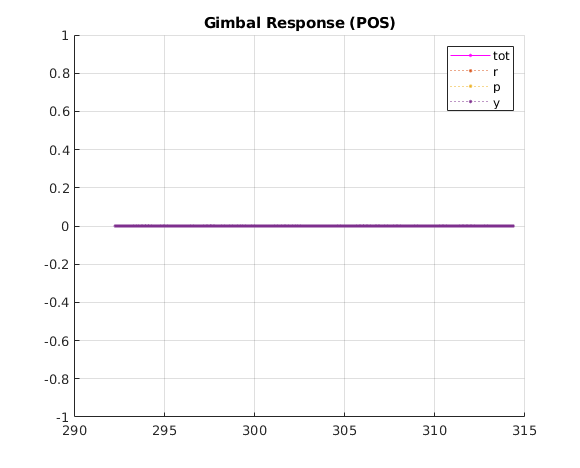
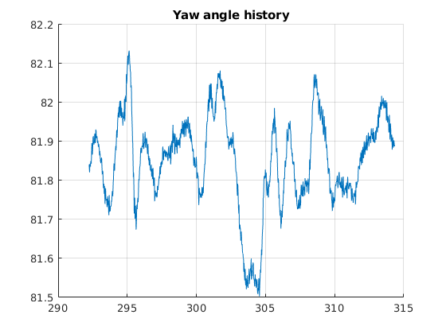

Contents
% Arg. doplot = 0; gdLogFile = "/home/jaehan/catkin_ws/src/niv_gnc/niv_gnc/utility/matlab_system_analysis/gdLog_sample_KH.csv"; % KH Step % gdLogFile = "/home/jaehan/Desktop/test flight/Vehicle_Analysis/KH/201013_105028/gdLog_201013_105028.csv"; % KH Sweep % DO NOT CHANGE _ params. c1 = 4; c2 = 0.01866; wmin = 0.4*2*pi; wmax = 10*2*pi; T = 20; d2r = pi/180; r2d = 1/d2r;
Load data
[data, data_time] = loader(gdLogFile); data_time = seconds(data_time);
Coodinate adjustment
posNed = [data.posNed_0,data.posNed_1,data.posNed_2]; posNedCmd = [data.posCmdNed_0,data.posCmdNed_1,data.posCmdNed_2]; velNed = [data.velNed_0,data.velNed_1,data.velNed_2]; velNedCmd = [data.velCmdNav_0,data.velCmdNav_1,data.velCmdNav_2]; dcmI2body = angle2dcm(wrapToPi(data.rpy_2*d2r), zeros(size(data,1),1), zeros(size(data,1),1),'zyx'); posXyz = zeros(size(posNed)); posXyzCmd = zeros(size(posNed)); velUvw = zeros(size(posNed)); velUvwCmd = velNedCmd; posXyzCmd = posNedCmd; posXyz = posNed; for i = 1:size(posNed,1) posXyz(i,:) = dcmI2body(:,:,1) * posNed(i,:)'; posXyzCmd(i,:) = dcmI2body(:,:,1) * posNedCmd(i,:)'; velUvw(i,:) = dcmI2body(:,:,1) * velNed(i,:)'; % velUvwCmd(i,:) = dcmI2body(:,:,i) * velNedCmd(i,:)'; end posXyz_0 = posXyz(:,1); posXyz_1 = posXyz(:,2); posXyz_2 = posXyz(:,3); posXyzCmd_0 = posXyzCmd(:,1); posXyzCmd_1 = posXyzCmd(:,2); posXyzCmd_2 = posXyzCmd(:,3); velUvw_0 = velUvw(:,1); velUvw_1 = velUvw(:,2); velUvw_2 = velUvw(:,3); velUvwCmd_0 = velUvwCmd(:,1); velUvwCmd_1 = velUvwCmd(:,2); velUvwCmd_2 = velUvwCmd(:,3);
Data parsing
testStartFlag = []; testFinishFlag = []; missionStartFlag = []; missionFinishFlag = []; fcMode = data.fcMcMode; missionType = data.missionType; ns = 1; nf = 1; nsm = 1; nfm = 1; for i = 2:length(fcMode) if fcMode(i) ~= fcMode(i-1) && fcMode(i) == 2 testStartFlag(ns) = i; ns = ns+1; elseif fcMode(i) ~= fcMode(i-1) && fcMode(i-1) == 2 testFinishFlag(nf) = i; nf = nf+1; end if fcMode(i-1) == 0 && fcMode(i) == 1 missionStartFlag(nsm) = i; nsm = nsm + 1; elseif fcMode(i-1) == 1 && fcMode(i) == 0 missionFinishFlag(nfm) = i; nfm = nfm + 1; end end responseSet = [data.rpy_0,velUvw_1,posXyz_1,data.rpy_1,velUvw_0,posXyz_0,data.rpy_2,velUvw_2,posXyz_2]; cmdSet = [data.rpdCmd_0,velUvwCmd_1,posXyzCmd_1,data.rpdCmd_1,velUvwCmd_0,posXyzCmd_0,data.ySp,velUvwCmd_2,posXyzCmd_2]; gimbaldev = sqrt(data.gimbalRPY_0.^2 + data.gimbalRPY_1.^2 + data.gimbalRPY_2.^2);
Select & Plot
Mission Type 4-1: 2 / 4-2: 3 / 4-3: 4 / 5-1: 0 / 5-2: 1 / 6-1: 8 / 6-2: ?
index guide
1 : roll step test
2 : v step test
3 : Y step test
4 : pitch step test
5 : u step test
6 : X step test
7 : yaw step test
8 : w step test
9 : Z step test
n = 6; % Select test index m = n; if m > 9 m = m-9; end Cmd = cmdSet(testStartFlag(n):testFinishFlag(n)-1,m); time = data_time(testStartFlag(n):testFinishFlag(n)-1); response = responseSet(testStartFlag(n):testFinishFlag(n)-1,m); doplot = 1;
TF estimation - use as required
Basic TF - All (Step & Sweep) - NOT USED AT THE MOMENT tfResult = {}; for i = 1:18 [Num,Den,delay]=estimate_tf(i,i,responseSet,cmdSet,testStartFlag,testFinishFlag); tfResult{i}.Num = Num; tfResult{i}.Den = Den; tfResult{i}.Delay = delay; A = [num2str(i),'th transfer function estimation complete']; disp(A) end
% Basic TF - (Step test only) % tfResult = {}; % for i = 1:9 % [Num,Den,delay]=estimate_tf(i,i,responseSet,cmdSet,testStartFlag,testFinishFlag); % tfResult{i}.Num = Num; % tfResult{i}.Den = Den; % tfResult{i}.Delay = delay; % A = [num2str(i),'th transfer function estimation complete']; % disp(A) % end % Mix TF - EXPERIMENTAL - NOT USED AT THE MOMENT % tfResult_mix = {}; % for i = 1:3 % [Num,Den,delay]=estimate_tf(3,i,responseSet,cmdSet,testStartFlag,testFinishFlag); % tfResult_mix{i}.Num = Num; % tfResult_mix{i}.Den = Den; % tfResult_mix{i}.Delay = delay; % A = [num2str(i),'th transfer function estimation complete']; % disp(A) % end
Sweep signal
res = c2*(wmax-wmin)*T/c1; omega = wmin + (exp((time-time(1))/T*c1)-1)*c2*(wmax-wmin); freq = omega/2/pi; theta = wmin*t + c2*(wmax-wmin)*(T/c1*exp(c1/T*t)-t) - res;
Plotting
if doplot == 1 range = testStartFlag(n):testFinishFlag(n)-1; figure(10) clf hold on grid on plot(time,data.rpy_0(range),'k') plot(time,data.rpy_1(range),'b') plot(time,data.rpy_2(range),'r') plot(time,data.rpdCmd_0(range),'k:') plot(time,data.rpdCmd_1(range),'b:') plot(time,data.ySp(range),'r:') title('angle') legend('r','p','y') figure(11) % clf hold on grid on plot(time-time(1),velUvw_0(range),'k') plot(time-time(1),velUvw_1(range),'b') plot(time-time(1),-velUvw_2(range),'r') plot(time-time(1),velUvwCmd_0(range),'k:') plot(time-time(1),velUvwCmd_1(range),'b:') plot(time-time(1),-velUvwCmd_2(range),'r:') title('vel') legend('u','v','w') figure(12) clf hold on grid on plot(time,posXyz_0(range),'k') plot(time,posXyz_1(range),'b') plot(time,-posXyz_2(range),'r') plot(time,posXyzCmd_0(range),'k:') plot(time,posXyzCmd_1(range),'b:') plot(time,-posXyzCmd_2(range),'r:') title('pos') legend('x','y','z') figure(13) clf hold on grid on title('Gimbal Response (POS)') plot(time,gimbaldev(range),'m.-') plot(time,data.gimbalRPY_0(range),'.:') plot(time,data.gimbalRPY_1(range),'.:') plot(time,data.gimbalRPY_2(range),'.:') legend('tot','r','p','y') figure(14) clf hold on grid on title('Yaw angle history') plot(time,data.rpy_2(range)) end 
Fcn definition
function [Num, Den, delay] = estimate_tf(n,mix,responseSet,cmdSet,testStartFlag,testFinishFlag) m = n; if n>9 m = n-9; end if mix>9 mix = mix-9; end Cmd = cmdSet(testStartFlag(n):testFinishFlag(n)-1,m); Response = responseSet(testStartFlag(n):testFinishFlag(n)-1,m); if mix ~= m Response = responseSet(testStartFlag(n):testFinishFlag(n)-1,mix); end Cmd = detrend(Cmd,0); Response = detrend(Response,0); timeseriesSet = iddata(Response,Cmd,0.02); sys = tfest(timeseriesSet,2,1,nan); Num = sys.Numerator; Den = sys.Denominator; delay = sys.IODelay; end